Virring
Blauschwarzer, geschichteter feinkörniger Granit
Höhe: 155 cm
Größte Breite: 120 cm
Größte Dicke: 27 cm
Runenhöhe: 13 / 20 cm
Runenstein :
Germund (N.N.s Sohn), machte diese Denkmäler zum Andenken an Sasser. Star errichtete den Stein zum Gedächtnis des Toten. Thor weihe diese Runen.
65 - Virring - Letztes Update 17.09.2025
Listennummer : DR 110 / DK MJy 65
| Navidaten: 56.43465 10.24627 oder: Drageshøjvej 6, Virring, 8960 Randers SØ |
Transliteration:
Seite A: ki-mutr : | ...n : k(a)rþi | : m(i)n(i) : --(u) : af(t) (:) | : sasur : star | r(i)sþi : stin : aft : tuþan :
Seite B: þur : uiki : þisi : kuml :
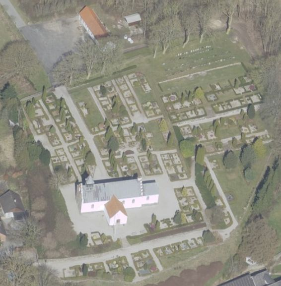
Das ist ein Luftfoto vom 01.04.2023 von Skråfoto - Lizenz: CC BY 4.0 - das die Kirche von Virring zeigt. Skråfoto ist eine Webanwendung, die von Klimadatastyrelsen weltweit kostenlos bereitgestellt wird. Die Aufnahmen werden alle zwei Jahre erneuert und neben einer Senkrechtaufnahme wird ein Schrägbild aus jeder Himmelsrichtung angeboten, das man über eine Adresssuche aufrufen kann.
Dieser Runenstein, der als eine von mehreren Treppenschwellen - mit der Inschriftseite nach oben - ewig vor dem Waffenhaus der Virring Kirche lag, wurde erst im Jahre 1865 vom Lehrer Niels Christian Ring (*24.05.1828 - 08.04.1897 - link-LIVES) aus Hørning als solcher anhand von Runenzeichen erkannt.
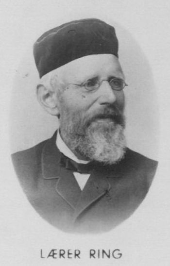
Handschriftlicher Vermerk dazu von Prof. Julius Magnus Petersen als letzte Zeile auf seiner Zeichnung vom 03.09.1870 (siehe unten).
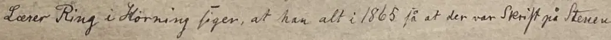
In früheren Quellen findet sich nichts zu dem Runenstein. Er stand aber ursprünglich vielleicht auf einem der alten Hügel Drageshøj oder Ebbeshøj, die sich ein paar hundert Meter nördlich der Kirche befinden.
Heute befindet sich der Stein im Waffenhaus der Virring Kirche. Die Inschrift ist von links nach rechts beginnend in der unteren linken Seite des Steins in paralleler Reihenfolge zu lesen. Eine Thor-weihe-Formel steht für sich im Textband oben auf dem Stein (von rechts nach links zu lesen). Seine Entstehung wird auf die Zeit von 900 - 960 datiert.
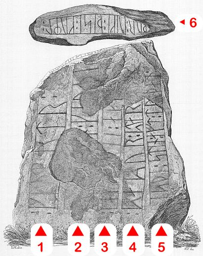
Bildquelle: Zeichnung von Magnus Petersen - Leserichtung von mir eingefügtÜber diese Webseite "Virring Kirke & Kirkegård" finden sich sehr interessante Informationen zu der Kirche, die offenbar bereits um 1070, im anglo-normannischen Stil errichtet wurde. Sie gehört wohl zu den vier ältesten Dorfkirchen in ganz Dänemark, neben Elmelunde auf Møn, Hammer auf Seeland und Asferg nördlich von Randers. Hier wird z.B. erwähnt - mit Foto - dass in der Kirche das älteste Buntglasfenster in ganz Skandinavien verbaut ist - um 1300!
Im Rahmen meiner 2022er Jütland Wikinger Tour war ich am Mittwoch, 15.06.2022, vor Ort. Da der Friedhofsangestellte mit Staubsaugen in der Kirche zu Gange war, stand die Kirche glücklicherweise offen. Von daher musste ich keinen Schlüssel erst langwierig besorgen, auch nicht hetzen und hatte alle Zeit für diese Fotos - diesmal auch die Oberseite mit den Runen der Weiheformel! Aber auf dem Stein ist aufgrund seiner Beschädigungen, der Abnutzung über die Jahrhunderte, in denen er als Schwelle im Boden lag, nicht wirklich eine Inschrift zu erkennen, am ehesten noch die obere Linie mit den Runen für "Thor weihe diese Runen".
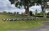 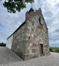 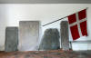
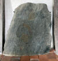 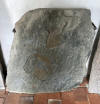 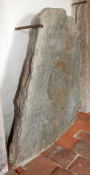 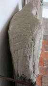 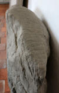 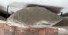 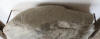
Bei meinem Besuch, den ich der Kirche am Donnerstag, 25.08.2016, abstattete, war sie leider verschlossen. Der Pfarrhof gegenüber, bei dem ich das letzte Mal den Kirchenschlüssel erhalten hatte, wurde inzwischen verkauft und ist kein Pfarrhof mehr. An der Kirchen-Infotafel fand ich einen Hinweis auf den Kassierer, Herrn Nielsen, im nahegelegenen Ammelhedevej 12. Den traf ich auch zu Hause an und konnte ihm mein Anliegen erklären. Daraufhin verständigte er den Küster per Telefon, der mich bei meiner Rückkehr an der Kirche schon erwartete. Wieder Glück gehabt! Dankeschön!
Diese Fotos konnte ich dann aufnehmen. Allerdings übersah ich vor lauter Hetzerei ausgerechnet hier, dass der obere Rand dieses Runensteins einen Inschriftenteil trägt - nämlich: "Thor weihe diese Runen" - und habe demzufolge leider kein Foto davon.
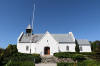 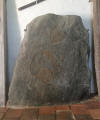 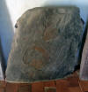 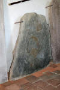 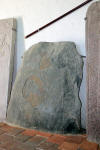
Zuvor stand ich am Dienstag, 30.09.2003, vor der verschlossenen Kirche, habe aber dankenswerter Weise den Schlüssel im Pfarrhof gegenüber erhalten. Das Foto im linken Frame entstand wohl dabei noch als Dia.
Im späten Juli 1870 hatte Prof. P. G. Thorsen (*07.08.1811 - 06.05.1883, Bibliothekar, Runenforscher und Historiker - link-LIVES - Artikel: Levnedsbeskrivelser af de ved Københavns Universitets Firehundredaarsfest promoverede Doktorer, Illustreret Tidende 1882, Nr. 1235 - vom 27.05.1833 / Grabstein in Varde / Eheschließung in Varde am 19. August 1848)
 Fotografie
zw. 1863-1900 von
Fotograf Budtz Müller (*26.12.1837 -
30.12.1884) -
Det Kgl. Biblioteks billedsamling - Lizenz:
Public Domain
Fotografie
zw. 1863-1900 von
Fotograf Budtz Müller (*26.12.1837 -
30.12.1884) -
Det Kgl. Biblioteks billedsamling - Lizenz:
Public Domain
offenbar eine mündliche Unterredung mit Justizrat Frants Hvass (*01.10.1824 - 12.12.1890, Mitglied der Jütländischen Historisch-Topographischen Gesellschaft aus Fredriksdal bei Randers - link-LIVES - Bestattungsprotokoll)
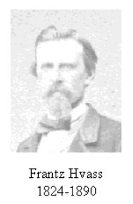
dem die Herausnahme des Runensteins am Herzen lag. Er hatte bereits zu anderen Runensteinen (z.B. Mejlby) Mitteilung nach Kopenhagen gemacht. Die Herausnahme erfolgte dann zeitnah am 03. September 1870 im Beisein des archäologischen Zeichners Prof. Julius Magnus Petersen (*04.09.1827 - 31.01.1917, Archäologischer Zeichner und Restaurator - link-LIVES - Bestattungsprotokoll)
 Bildquelle: Fotografie
von 1903 von Fotograf Marius Christensen
(*24.06.1874 -
25.06.1907) -
Det Kgl. Biblioteks billedsamling - Lizenz:
Public Domain
Bildquelle: Fotografie
von 1903 von Fotograf Marius Christensen
(*24.06.1874 -
25.06.1907) -
Det Kgl. Biblioteks billedsamling - Lizenz:
Public Domain
und von Justizrat Frants Hvass, über dessen Eifer und Interesse in der Sache es überhaupt dazu kam. Bei der Herausnahme wurde auch erst der Inschriftteil auf der Spitze des Steins entdeckt. Prof. Julius Magnus Petersen fertigte unmittelbar danach Zeichnungen des Runensteins - siehe unten.
Prof. Julius Magnus Petersen zeichnete diesen Runenstein für das Runenwerk von P. G. Thorsen (*07.08.1811 - 06.05.1883, Bibliothekar, Runenforscher und Historiker) im Jahr 1870 - De danske runemindesmærker beskrevne og forklarede, anden Afdeling, Jyllands Runemindesmærker, I. Afbildninger, 1879 - Nr. 21 - Scan aus dem in meinem Besitz befindlichen Exemplar.
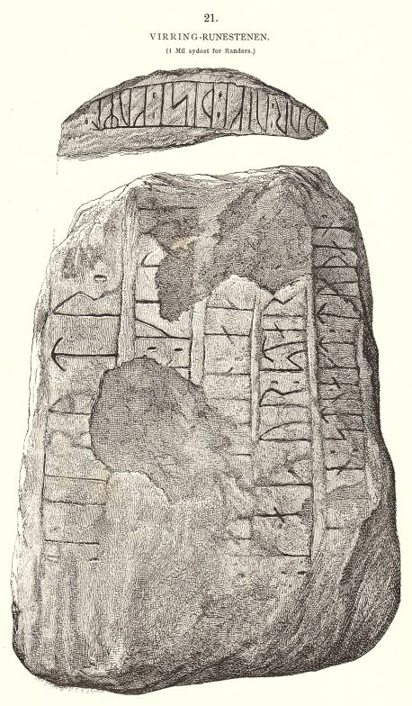
In seinem 1880 erschienenen "Band II - Text" hat Thorsen auf den S. 53-58 seine Erkenntnisse zu dem Runenstein veröffentlicht. Er hatte bereits 1870 vorweg über seine Studien zu diesem Runenstein einen Aufsatz veröffentlicht (siehe unten).
In P. G. Thorsens Nachlass (Bezeichnet als: P. G. Thorsens optegnelser, tegninger m.m. vedrørende runer og runemindesmærker - überführt aus der Kopenhagener Universitätsbibliothek 1929 - Gemäß Ministerialschreiben vom 04.03.1929; früher benannt als Additamenta 612 kvart) - heute befindlich in der Königlichen Bibliothek unter NKS 3296 kvart (in mehreren einzelnen Pappschachteln) - fand sich bei meinem Besuch am 28.09.2022 umfangreiches Material in der Pappschachtel mit der Nummer 7 vor.
Aufzeichnungen von Thorsen auf Briefpapier,


eine tolle Zeichnung von Prof. Julius Magnus Petersen vom Tag der Herausnahme aus dem Boden vom 03.09.1870 nebst einer Entwurfszeichnung,


ein vierseitiger Brief zwei Tage später - 05. September 1870 - von Justizrat Frants Hvass verfasst, war an Thorsen gerichtet. Darin hat er auch zwei kleine Zeichnungen zur Lage des Runensteins eingebettet.
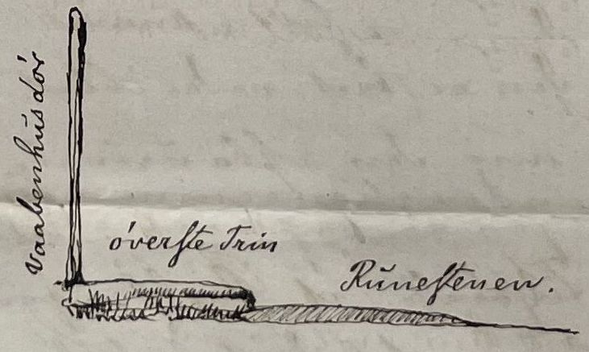
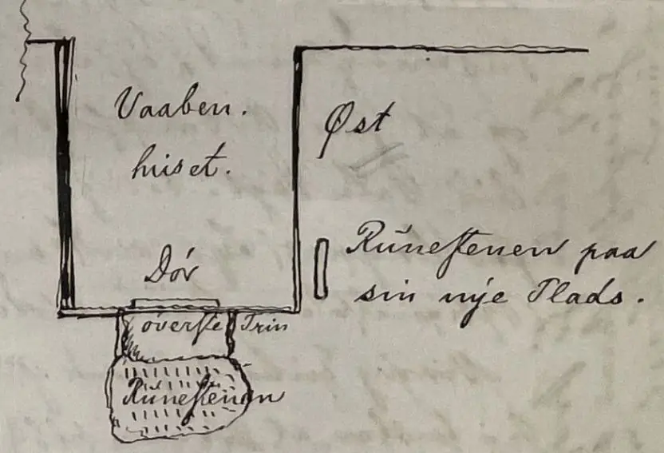
Außerdem fand ich noch einen Sonderdruck zur Abhandlung "Virring-runestenen" von Thorsen aus den "Aarbøger for nordisk Oldkyndighed og Historie, 1870", S. 420-423 (mit einer Zeichnung von Prof. Julius Magnus Petersen auf Tafel 24).
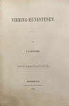 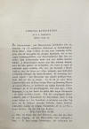 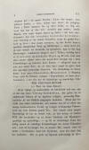 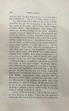 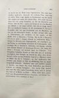 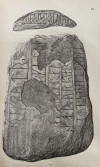


George Stephens (*13.12.1813 - 09.08.1895, englischer Archäologe und Philologe)
 Bildquelle:
Minder fra min Virksomhed paa Arkæologiens
Omraade fra 1845 til 1908 von
Magnus Petersen (*04.09.1827 - 01.02.1917) auf der
Seite 265 - Lizenz:
Public Domain
Bildquelle:
Minder fra min Virksomhed paa Arkæologiens
Omraade fra 1845 til 1908 von
Magnus Petersen (*04.09.1827 - 01.02.1917) auf der
Seite 265 - Lizenz:
Public Domain
unternimmt im Jahr 1884 in seinem Werk "The old-northern runic Monuments of Scandinavia and England, Vol. III" auf den S. 357-358 anhand dieser Zeichnung von Prof. Julius Magnus Petersen aus der 1870er Abhandlung von P. G. Thorsen einen Deutungsversuch.
Prof. Ludv. F. A. Wimmer (*07.02.1839 - 29.04.1920, Philologe und Runenforscher - link-LIVES - Politiets registerblade - Bestattungsprotokoll)
 Bildquelle: Fotografie
zw. 1877-1900 von Fotograf Hansen & Weller -
Det Kgl. Biblioteks billedsamling - Lizenz:
Public Domain
Bildquelle: Fotografie
zw. 1877-1900 von Fotograf Hansen & Weller -
Det Kgl. Biblioteks billedsamling - Lizenz:
Public Domain
berichtet zu dem Runenstein in seinem großformatigen Werk "De danske runemindesmærker undersøgte og tolkede af Ludv. F. A. Wimmer, Andet Bind, Runestenene i Jylland og på øerne. 1899-1901" ab der S. 151ff. mit der Nr. 27. Diese Zeichnung, die ich von der Seite 153 aus der in meinem Besitz befindlichen Ausgabe eingescannt habe, stammt von Magnus Petersen (*04.09.1827 - 01.02.1917, Archäologischer Zeichner und Restaurator), wurde aber von Ludv. F. A. Wimmer, der den Runenstein am 31.08.1877 und am 15.07.1882 vor Ort untersuchte, zuletzt im Oktober 1884 überarbeitet. Wimmer führt in dem Werk, Fußnote 1 zur S. 151, auch noch aus, dass Thorsen den Stein überhaupt nicht selbst untersucht hat, wie man seinen Angaben zufolge vielleicht glauben sollte. Seine Untersuchungen beruhen demnach nur auf den Zeichnungen von Petersen und den Informationen aus dem o.a. Brief von Justizrat Frants Hvass (siehe unten Minder fra min virksomhed - 1909 - Erinnerungen von Magnus Petersen).
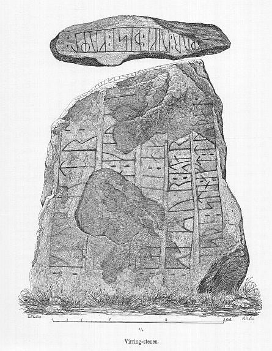
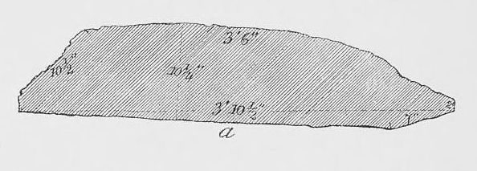
Lizenz: Public Domain
Prof. Dr. Ludv. F. A. Wimmer hat seine jahrelangen Aufzeichnungen der "Kgl. Bibliotek" in Kopenhagen überlassen. Ein Verzeichnis darüber wurde 1915 in Buchform herausgegeben - "Collectio runologica Wimmeriana: Fortegnelse over Ludv. F. A. Wimmers runologiske o. a. Samlinger i Det kgl. Bibliotek"
In seiner runologischen Sammlung, die er der Königlichen Bibliothek in Kopenhagen vermacht hat, befinden sich unter "III - Originaltegninger af de danske Runemindesmærker, udførte paa Undersøgelsesrejserne af Magn. Petersen og kontrollerede paa Stedet af Ludv. Wimmer, samt Prøvetryk af de paa Grundlag af de nævnte Tegninger, Aftryk o. s. v. til De danske Runemindesmærker" udførte Afbildninger med Wimmers Rettelser"


zu dem Runenstein von Virring seine Aufzeichnungen unter der Nr. 41. Am 27.09.2022 durfte ich dort diese Zeichnung von Prof. Julius Magnus Petersen - datiert auf den 31.08.1877 mit dem Vermerk zu Wimmers Überarbeitungen vom 15.07.1882 - fotografieren. Daneben findet sich in diesen Unterlagen auch ein Blatt mit zahlreichen Überarbeitungen zur Inschrift in mehreren Schritten aus dem Jahr 1884, worüber man mal sieht wie er bei seiner Arbeit vorgegangen ist.


Prof. Julius Magnus Petersen seinerseits schreibt auf der S. 105 ff. über die Herausnahme des Runensteins von Virring in seinen Erinnerungen "Minder fra min virksomhed" - als Buch erschienen im Jahr 1909.
"Da Sommeren kom beredte jeg mig til atter at fortsætte den afbrudte Rejse i Jylland for at faa tegnet videre efter de derværende Runestene, som Thorsen nu begyndte at længes efter. I Landsbyen Virring i Nærheden af Randers, havde Justitsraad Hvass opdaget en Runesten der laa som Tærskelsten foran Indgangen til Kirken. Jeg rejste strax over til Hr. Hvass, hvor jeg blev modtagen med megen Venlighed paa Frederiksdal ved Randers, hvor Hvass boede, og næste Dag kjørte Justitsraaden mig til Virring Kirke. Stenen laa helt bedækket af Støv og Jord, og da dette fjernedes fandt jeg en næsten helt bortslidt Runeskrift paa Stenens Overflade; nogle Ord vare dog nogenlunde læselige, disse vare: »Rigmutr og ... . rejste Sten denne for ... efter Døden« det øvrige var jeg ikke istand til at læse. Men med den i det foregaaende Aar undersøgte Ulstrup-sten i Minde -, hvor den bageste Side var skjult, forlangte jeg at Stenen her optoges, for at jeg kunde see, om nogen Indskrift fandtes paa dens Bagside. Justitsraad Hvass billigede dette, og han lod den helt udgrave, saa jeg fik seet Stenen paa alle Kanter, og ganske rigtig var der paa dens Overkant en Runelinie; der stod: »Thor viki disse Runer« , altsaa en sikker hedensk Indskrift, der maa være samtidig med den fynske Glavendrup Runesten (se foran, Side 50), hvor der staar: »Thor helliges denne Grav«. Prof. Thorsen skriver i en lille Afhandling i Oldsk. Selsk. Aarbøger 1870, at han selv var tilstede og saae denne Indskrift; det forundrede mig meget, thi han var aldrig med mig i de Aar jeg rejste om i Landet og aftegnede Runestenene for ham, og ved Virringstenen var han ikke tilstede, da Hr. Hvass og jeg lod den fremdrage. Nu er den opstillet ved Kirkens sydlige Side; om Prof. Thorsen i en senere Tid har seet den der, er muligt, men jeg er ikke vidende derom."
Übersetzung:
"Als der Sommer kam, bereitete ich mich darauf vor, die unterbrochene Reise in Jütland wieder fortzusetzen, um weitere Runensteine zu zeichnen, mit denen mich Thorsen beauftragt hatte. Im Dorf Virring bei Randers hatte Justizrat Hvass einen Runenstein entdeckt, der als Schwellenstein vor dem Eingang zur Kirche lag. Ich ging sofort zu Herrn Hvass, in Frederiksdal bei Randers, wo Hvass lebte, wurde mit viel Freundlichkeit empfangen und am nächsten Tag fuhr mich der Justizrat zur Virring-Kirche. Der Stein lag völlig mit Staub und Erde bedeckt, und als diese entfernt wurden, fand ich eine fast vollständig abgenutzte Runenschrift auf der Oberfläche des Steins; einige Wörter waren jedoch einigermaßen lesbar, diese waren: "Rigmutr und ... . Stein hat dies für nach dem Tod errichtet - den Rest konnte ich nicht lesen. Aber in Anbetracht des im Vorjahr untersuchten Ulstrup-Steins, dessen Rückseite verdeckt war, verlangte ich, dass der Stein hier aufgedeckt wird, damit ich sehen konnte, ob sich auf seiner Rückseite eine Inschrift befand. Der Justizrat Hvass genehmigte dies und ließ ihn vollständig ausgraben, sodass ich den Stein von allen Seiten sehen konnte, und tatsächlich war an seinem oberen Rand eine Runenlinie; es lautete: Thor weihe diese Runen - d. h. bestimmt eine heidnische Inschrift, die zeitgleich mit dem Glavendrup-Runenstein von Fünen sein muss (siehe Seite 50), wo es heißt: Dieses Grab ist Thor geweiht. Prof. Thorsen schreibt in einer kleinen Abhandlung in Oldsk. Selsk. Aarbøger1870, dass er selbst anwesend war und diese Inschrift gesehen hat; es hat mich sehr überrascht, weil er in den Jahren, in denen ich durch das Land gereist bin und die Runensteine für ihn gezeichnet habe, nie bei mir war, und beim Virringstein war er nicht anwesend, als Herr Hvass und ich ihn aus der Erde holen ließen. Jetzt ist er an der Südseite der Kirche aufgestellt; ob Prof. Thorsen ihn später dort gesehen hat, was möglich ist, weiß ich jedoch nicht."
Auch hier also ein Hinweis darauf, dass P. G. Thorsen es mit der Wahrheit offenbar manchmal nicht so genau nahm! (siehe oben Wimmer zu seiner Fußnote 1 - S. 151).
Adolf Gotthard Noreen (*13. März 1854 - 13. Juni 1925, schwedischer Sprachwissenschaftler)
 Bildquelle:
Wikipedia -
Lizenz:
Public Domain
Bildquelle:
Wikipedia -
Lizenz:
Public Domain
schreibt 1913 in dem Buch "Grundriß der germanischen Philologie - Geschichte der nordischen Sprachen - besonders in altnordischer Zeit" auf der S. 8/9 nur kurz: "Aus dem Ende des 10. Jahrhunderts rühren her u.a....Virring...(980-985)..."
Johannes Steestrup (Johannes Christoffer Hagemann Reinhardt Steenstrup, *05.12.1844 - 03.08.1935, Historiker - link-LIVES - Bestattungsprotokoll)
 Bildquelle: Fotografie
zw. 1888-1913 von Fotograf Frederik Riise -
Det Kgl. Biblioteks billedsamling - Lizenz:
Public Domain
Bildquelle: Fotografie
zw. 1888-1913 von Fotograf Frederik Riise -
Det Kgl. Biblioteks billedsamling - Lizenz:
Public Domain
schreibt in seiner Abhandlung "Hammer og Kors" im Arkiv för nordisk filologi - Tillägsband til Band 44 - Lund 1929 - S. 45-46 - davon, dass die Inschrift mit der Thor-Formel sicherlich vor der Einführung des Christentums in Dänemark (um 965) entstanden sei.
Erik Moltke (*04.04.1901 - 19.10.1984, Runologe, Historiker - link-LIVES)
 Bildquelle: Scan von Buchumschlag "Runerne i Danmark og ders
oprindelse" - Erik Moltke - 1976 - Lizenz:
CC-BY-SA
Bildquelle: Scan von Buchumschlag "Runerne i Danmark og ders
oprindelse" - Erik Moltke - 1976 - Lizenz:
CC-BY-SA
hat diese beiden Fotos am 29.07.1930 fotografiert. Die Runen sind hier natürlich eingefärbt/nachgefahren worden.
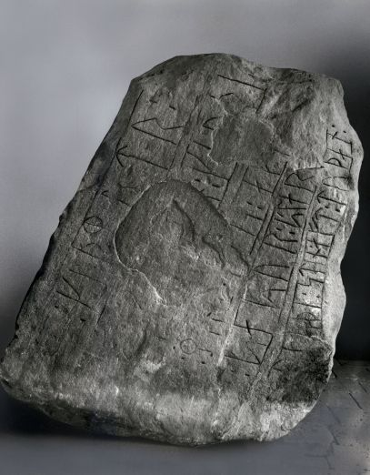
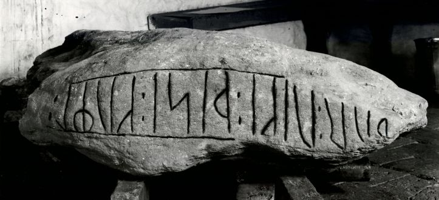
Digitale Sammlungen des Nationalmuseum Kopenhagen - Lizenz: CC-BY-SA
Herr cand. mag. Frederik Johannes Henrik Orluf (*04.02.1869 -11.09.1954, Lehrer und Hobbyforscher)
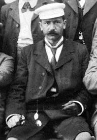
Bildquelle: VejleWiki.dk - Lizenz: Public Domainaus Vejle bringt in Danske Studier 1931 in einem Aufsatz mit dem Titel "Hærormene fra Lindholm og Kragehul" auf der S. 72, Fußnote 4, noch diesen Beitrag:
"Dette er i saa fald den eneste epigrafiske forbindelse, hvori Navnet Starkad hidtil har kunnet antages. Wimmers læsning Starkad paa Virringstenen er beklageligvis uhjemlet. Paa stenen staar kun star, personnavnet Stær; der hverken staar eller har nogensinde staaet flere runer derefter i samme linje, og næste begynder med et nyt ord (egen undersøgelse 10.9.16: ovenfor star findes absolut ikke den mindste del af nogen som hugget erkendelig linje af skrifttræks form; alt er naturlige og uregelmæssige furer og andre ujævnheder". Ogsaa i 3. linje staar der intet efter aft).
Übersetzung:
"...In diesem Fall ist dies die einzige inschriftliche Verbindung, in der der Name Starkad bisher angenommen werden konnte. Wimmers Lesung von Starkad auf dem Virringstenen ist leider haltlos. Auf dem Stein steht nur star, der Personenname Stær; es gibt weder, noch gab es danach mehr Runen in derselben Zeile und danach beginnt es mit einem neuen Wort (eigene Studie 10.9.16: "Über dem Wort star gibt es absolut nicht den kleinsten Teil einer erkennbaren eingeritzten Linie in der Form der Inschrift; alles sind natürliche und unregelmäßige Furchen und andere Unregelmäßigkeiten". Auch in der 3. Linie steht nichts nach aft").
Im Vorfeld zu dem 2016 erschienenen Buch von Lisbeth M. Imer (*1973, Runologin am Nationalmuseum Kopenhagen) "Danmarks Runesten - en fortælling" reiste sie mit dem Fotografen Roberto Fortuna zur Bestandsaufnahme durch die Lande. Dieser hat den Runenstein mit Schräglicht bei Dunkelheit aufgenommen und darüber wirklich herausragende Fotos erzielt. Diese Fotografien stammen vom 08. März 2012. Allerdings zeigt die o.a. sw Aufnahme von Moltke, bei der die Runen auf der Oberseite auch nachgemalt wurden, den Inschriftsabschnitt doch (erstmals) besser als die High-Tech Aufnahme von Fortuna. Da hätte er senkrechter aufnehmen sollen.
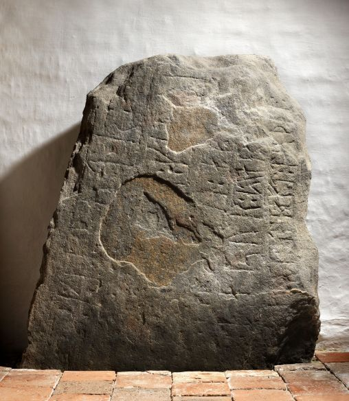
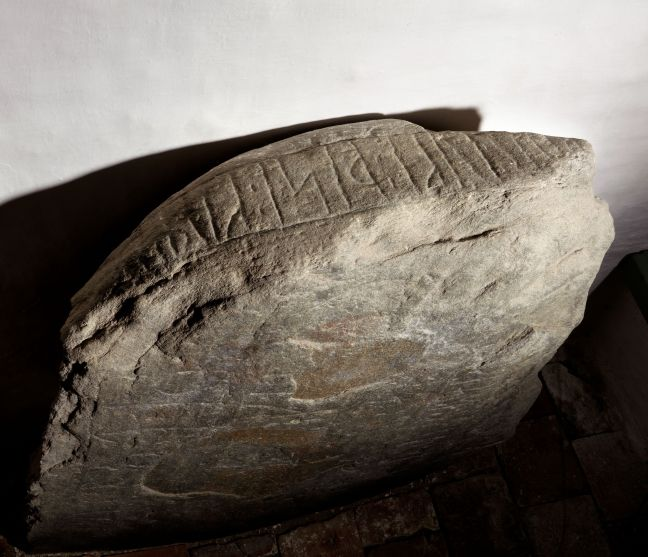
Digitale Sammlungen des Nationalmuseum Kopenhagen - Lizenz: CC-BY-SA
Die Informationen zu diesem Runenstein aus der dänischen Runendatenbank finden sich hier.
Der entsprechende Eintrag in "Fund og Fortidsminder" ist hier verlinkt. Darin ist auch ein Zustandsbericht des Steinkonservators Leif Vogensen aus dem Jahr 2018 verlinkt.
Über diesen Link finden sich zu dem Runenstein Informationen des Forschungsprojektes "Runes" der Akademie der Wissenschaften zu Göttingen.
Auf der Webseite von "Danske Fortidsminder" findet sich auch eine Seite zu dem Virring Runenstein.
Literaturhinweise:
Johannes Steenstrup - Hammer og Kors - Arkiv för nordisk filologi - Tillägsband til Band 44 - Lund 1929 - S. 44-61 - darin S. 45-46 interessant